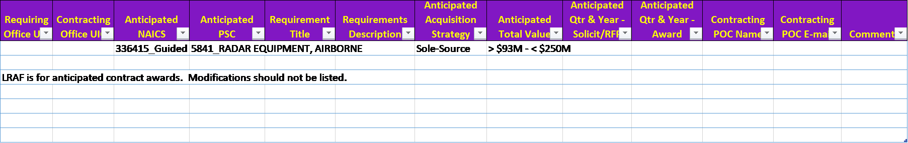

**ID__NMCARS_Annex-25__ID**
Pursuant to 5205.404, the template below shall be used in reporting the long range acquisition
forecast. The electronic version of this template can be found at
https://www.secnav.navy.mil/rda/DASN-P/Pages/NMCARS.aspx.
